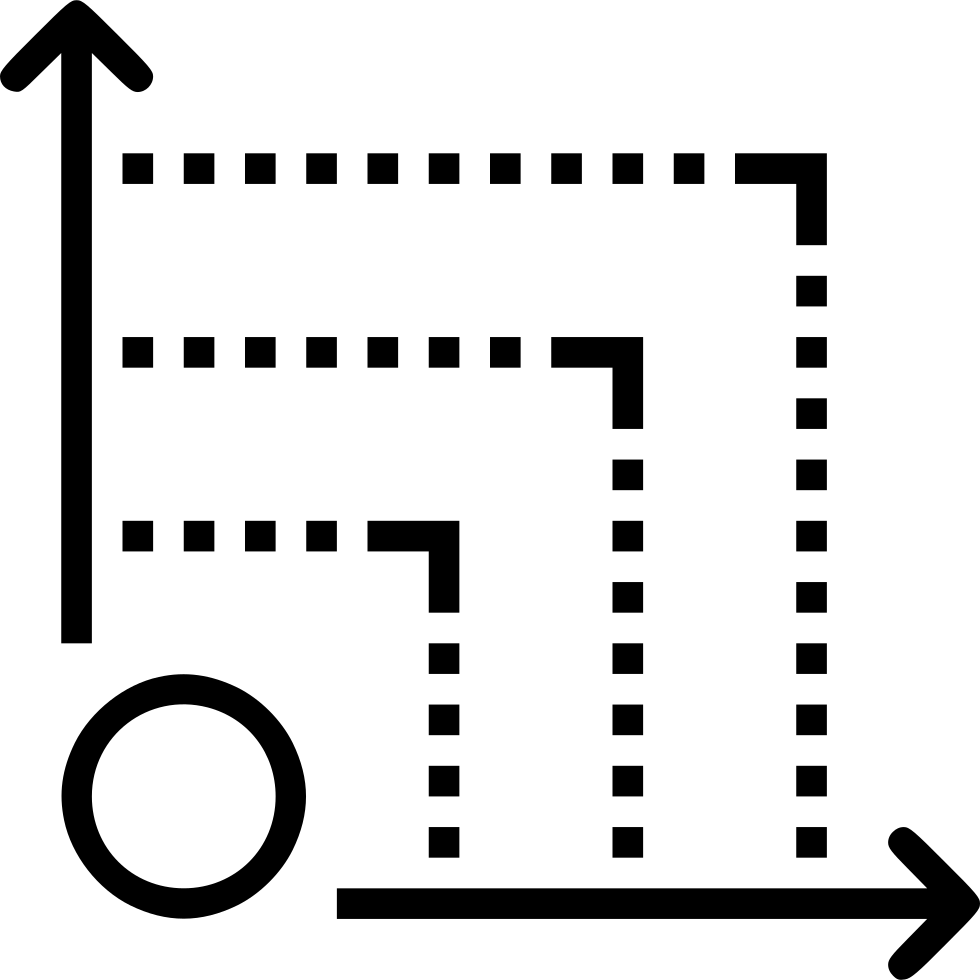
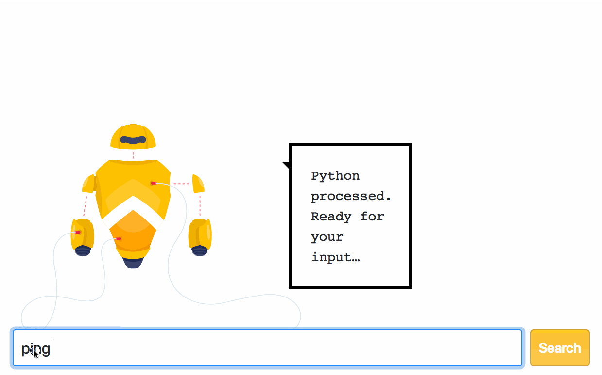

Supercharge
Your Regression Testing
Table of contents
-
Our Speaker Today
-
Context And Prerequisites
-
The Regression Testing Problem
-
Agile-ish Toolbox Solution
-
Future Work
-
Q&A
Perpetual beta learner
QA Manager with groundwork experience
Test architect who enjoys the craft
Who am I

Quick poll
How many of you, are performing Regression testing on:
every deploy?
every release candidate?
unclear business decisions?
Context Awareness
What is imperative to understand in our environment:
Scripted tests are only half of the Testing story
White box testing is not scary
... or hard!
Version Control Systems are powerful
... and vital tool!
Regression testing is painful
But essential, because software changes constantly
Team Structure Impacts Regression Testing
Agile requires that the whole team should take responsibility for regression testing
... and not only testers!
Releases increment the functionality
The development time does not necessarily grow with releases,
... but the testing time does!
Within the same budget
No company will invest more time in testing and less for development
... we need scalable solution!
Solution Stack Overview
RCRCRC mnemonic
Code indexer, search and navigation tool - Starscope
Git VCS
Regression testing is change-focused
How much effort is required, ultimately depends upon the scope.
Which can be effectively decided when the tester gets input from the business and dev team about the
Amount
Scope
and Nature of change!
Amount of change
# here be dragons
# diff between two tags
cd ./to/git/repo
git checkout {main-branch} # (e.g. master)
git fetch --all
git tag --list
git diff {tag1} {tag2} --stat
git diff {tag1} {tag2} -- some-file-name
git diff --name-only {tag1} {tag2}
Abstruse CI platform example #1
user@~/Desktop/abstruse (master): git diff v1.5.0 v1.6.6 --stat
# files omitted for readability
angular.json | 140 +
package-lock.json | 20390 ++++++++++++++++++++++++++++++++++++++++++-----------------------------------------------
package.json | 249 +-
src/api/config.ts | 32 +-
src/api/db/migrations.ts | 7 +-
src/api/db/repository.ts | 107 +-
src/api/deploy/aws-code-deploy.ts | 50 +-
src/api/deploy/aws-elastic.ts | 50 +-
src/api/deploy/aws-s3.ts | 220 +-
src/api/env-variables.ts | 4 +-
src/api/security.ts | 17 +-
src/api/server-routes.ts | 253 +-
# files omitted for readability
Scope of change
# can be found via tools that can peek changed functions’ references in the code
gem install starscope # install the code indexer tool
tsc src/**/*.ts --outDir js/ # compile Typescript to JS
starscope js/ # create local DB
starscope -q calls,{function-name-all-references}
starscope -q require,{function-name} | grep -F 'file/location'
Abstruse CI platform example #2
# file level
user@~/Desktop/abstruse (master): tsc src/**/*.ts --outDir js/
user@~/Desktop/abstruse (master): starscope js/
user@~/Desktop/abstruse (master): starscope -q requires,process-manager
./process-manager -- js/api/socket.js:11 (var process_manager_1 = require("./process-manager");)
./process-manager -- js/api/webhooks.js:7 (var process_manager_1 = require("./process-manager");)
./process-manager -- js/api/server-routes.js:27 (var process_manager_1 = require("./process-manager");)
./process-manager -- js/api/docker-stats.js:7 (var process_manager_1 = require("./process-manager");)
# method_level
# src/api/process-manager.ts:export function restartJob(jobId: number)
user@~/Desktop/abstruse (master): starscope -q calls,restartJob
restartJob -- js/api/socket.js:210 (process_manager_1.restartJob(parseInt(event.data.jobId, 10)))
Nature of change
Can be best found in direct communication with the dev team.
It is a composite index of Coupling (Scope of change) and Type Rank.
Usually the following types of files are with high level of feature dependencies:
-
Configurations e.g. dependencies, environment variables
-
Wrappers e.g. Decorators, Proxy, Bridge, Facade, Adapter
-
Base classes
-
Abstractions e.g. in Typescript look for keywords like abstract, extends
Abstruse CI platform example #3
user@~/Desktop/abstruse (master): git diff v1.5.0 v1.6.6 --stat
...
src/app/components/app-header/app-header.component.ts | 7 +-
...
user@~/Desktop/abstruse (master): grep -rnw 'js/' -e 'decorator'
...
js//src/app/components/app-header/app-header.component.js:11:var __param = (this && this.__param) || function (paramIndex, decorator) {
...
RCRCRC
Regression Testing Heuristic by Karen N. Johnson
Recent
Core
Risk
Configuration
Repaired
Chronic
Recent and Repaired
New features, new areas of code are more vulnerable.
Bug fixes can introduce new issues.
# diff between two tags
cd ./to/git/repo
git checkout {main-branch} # (e.g. master)
git fetch --all
git log -{number-of-commits-back} --oneline
git diff {SHA1} {SHA2} --stat
git diff {SHA1} {SHA2} -- some-file-name
git diff --name-only {SHA1} {SHA2}
Abstruse CI platform example #4
user@~/Desktop/abstruse (master): git diff v1.5.0 v1.6.6 -- src/api/security.ts
...
-import * as crypto from 'crypto';
...
-import { RSA } from 'rsa-compat';
+import { RSA } from 'rsa-compat-ssl';
...
+import * as bcrypt from 'bcrypt';
export function generatePassword(plain: string):
- return new Promise((resolve, reject) => {
- resolve(calculateMd5(plain));
- });
+ return bcrypt.hash(plain, 12);
}
Abstruse CI platform example #5
export function comparePassword(plain: string, hash: string): Promise {
- return generatePassword(plain)
- .then(calculated => hash === calculated);
+ return bcrypt.compare(plain, hash);
}
export function generateJwt(data: any): Promise {
return new Promise((resolve, reject) => {
+ delete data.password;
+
jwt.sign(data, config.jwtSecret, {}, (err: jwt.JsonWebTokenError, token: string) => {
if (err) {
reject(err);
@@ -42,10 +41,6 @@ export function decodeJwt(token: string): any {
}
}
-export function calculateMd5(str: string): string {
- return crypto.createHash('md5').update(str).digest('hex');
-}
-
Configuration sensitive
Code that’s dependent on environment settings can be vulnerable.
for i in $(find . -name '*config*')
do
git diff {tag1} {tag2} --stat $i
done
Abstruse CI platform example #6
user@~/Desktop/abstruse (master): ll
# files omitted for readability
total 1384
-rw-r--r-- 1 evgenikostadinov staff 458B Apr 2 13:47 .abstruse.yml
-rw-r--r-- 1 evgenikostadinov staff 2.2K Apr 2 13:47 Dockerfile
-rw-r--r-- 1 evgenikostadinov staff 3.7K Apr 2 13:47 angular.json
-rw-r--r-- 1 evgenikostadinov staff 877B Apr 2 13:47 karma.conf.js
-rw-r--r-- 1 evgenikostadinov staff 510K Apr 2 13:47 package-lock.json
-rw-r--r-- 1 evgenikostadinov staff 4.1K Apr 2 13:47 package.json
-rw-r--r-- 1 evgenikostadinov staff 536B Apr 2 13:47 protractor.conf.js
-rw-r--r-- 1 evgenikostadinov staff 363B Apr 2 13:47 tsconfig.json
-rw-r--r-- 1 evgenikostadinov staff 1.2K Apr 2 13:47 webpack.api.js
Abstruse CI platform example #7
user@~/Desktop/abstruse (master): for i in $(find . -name '*config*');do git diff v1.5.0 v1.6.6 --stat $i; done
.editorconfig | 13 +++++++++++++
1 file changed, 13 insertions(+)
tsconfig.json | 32 ++++++++++++++------------------
1 file changed, 14 insertions(+), 18 deletions(-)
e2e/tsconfig.e2e.json | 12 ++++++++++++
1 file changed, 12 insertions(+)
src/tsconfig.api.json | 30 ++++++++++++++++++++++++++++++
1 file changed, 30 insertions(+)
src/app/services/config.service.ts | 8 ++++----
1 file changed, 4 insertions(+), 4 deletions(-)
src/tsconfig.app.json | 15 +++++++++++++++
1 file changed, 15 insertions(+)
src/api/config.ts | 32 ++++++++++++++++++++++----------
1 file changed, 22 insertions(+), 10 deletions(-)
src/tsconfig.spec.json | 25 +++++++++++++++++++++++++
1 file changed, 25 insertions(+)
Chronic
Hottest files via log crunching (would be great to compare with Defect density heatmap).
git log --name-status $*| grep -E '^[A-Z]\s+'| cut -c3-500| sort| uniq -c| grep -vE '^ {6}1 '| sort -n| tail
Abstruse CI platform example #8
user@~/Desktop/abstruse (master): git log --name-status $* | grep -E '^[A-Z]\s+' | cut -c3-500 | sort | uniq -c | grep -vE '^ {6}1 ' | sort -n | tail
# files omitted for readability
71 src/api/socket.ts
84 src/api/server-routes.ts
90 src/api/process.ts
137 src/api/process-manager.ts
Future Work
Regression Test Selection Techniques for Test-Driven Development
Automated Regression Test Suite Optimization based on Heuristics
Git Semantic Code Search

Careful consideration and Practicing selectiveness are the Key
Evgeni Kostadinov
evgenikostadinov@gmail.com
 /in/ekostadinov
/in/ekostadinov
 /ekostadinov
/ekostadinov
Thank You!

Evgeni Kostadinov
evgenikostadinov@gmail.com
 /in/ekostadinov
/in/ekostadinov
 /ekostadinov
/ekostadinov